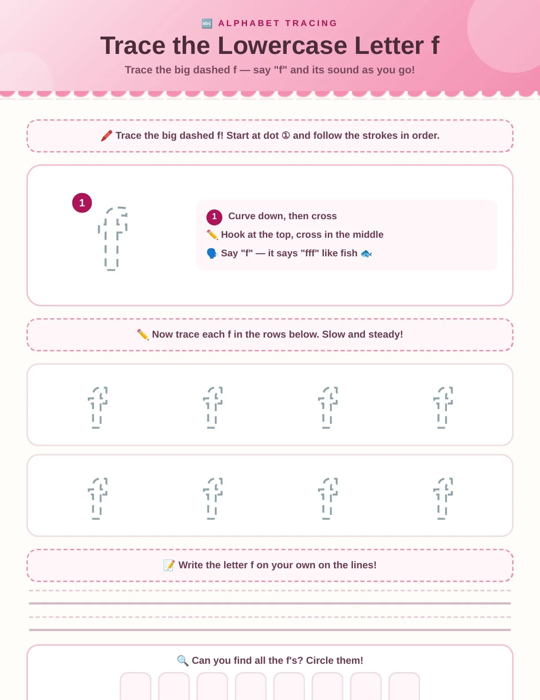

Lowercase Letter F Free Printable Lowercase Letter F Tracing Activity For Kids
Small f stands taller than almost every other letter — it is the f in fish in every storybook, and it hides twice inside giraffe. This free printable lowercase letter f tracing worksheet gives toddlers and preschoolers a fun, no-prep way to practice its tall hook — print it at home and trace the letter f through play.
Quick Answer
This free printable helps toddlers and preschoolers practice tracing the lowercase letter f — a tall, hooked letter that stretches the full height of the lines. The worksheet includes large guided tracing lines, directional arrows, and fun practice rows that teach its unusual shape: hook at the top, long line down, cross in the middle. Print as many copies as you need at home, no signup required — tracing that tall shape again and again is how little hands build fine motor skills and letter recognition.
At a Glance
- Ages: Toddlers and preschoolers
- Activity: Tracing lowercase f — a tall, hooked letter that stretches the full height of the line
- Skills: Letter f formation and pencil control
- Format: Printable tracing worksheet (PDF)
- Cost: Free, no signup
✏️ Trace The Letter F
Use the printable to help your child trace the lowercase letter f, starting with the little hook at the top line and running the long line down to the ground. Practice adding the cross bar at the middle line last, and build confidence with early letter formation and writing skills.
Free Lowercase Letter F Tracing Printable

How To Use This Printable
- Download and print the letter f pages on letter-size paper. The print button opens the full-size page in a new tab if you prefer to print from there.
- Say the letter name and sound together before your child starts: “F says /f/, like fish, frog and flower — and in storybooks, those words start with this tall small f.”
- Trace slowly: hook over at the top first, then the long line all the way down, then the short cross at the middle line. Small f uses the full height of the lines — let it stand tall.
- Play I-spy with the letter f around the house — look inside words too: leaf, giraffe, and the two f’s hiding in “off”.
🔤 All About Small f
Small f is one of the tallest letters in the alphabet. It starts at the top line with a little hook that curves over like the top of a candy cane, runs straight down to the ground line, and wears a short cross bar at the middle line. It looks quite different from capital F: the capital is all straight lines, while the small one is a long line with a curl.
The letter f makes the /f/ sound in fish, frog and flower, and it hides inside words too — there is an f in leaf, two in giraffe, and two more in off.
Most of the f's your child will ever read are this tall small one, standing head and shoulders over its neighbours in storybook words. Spotting it in books after tracing — the tallest letter on the line — is an easy way to keep practicing.
Why Trace Lowercase Letters?
Children meet lowercase letters far more often than capitals — nearly every word in a storybook is lowercase — and f teaches the top of the line system: it stretches from the ground line all the way to the top line. That tall reach makes it a good bridge to t, l and h, the other tall letters. Practicing the letter f also supports fine motor control, letter formation, and early handwriting development.
🎁 Keep Exploring Free Learning Activities
Discover more printable activities, toddler resources, and learning ideas created for busy parents.
🎁 View All Free Resources❓ Lowercase Letter F Tracing FAQ
Is this lowercase letter F tracing printable really free?
Yes — this lowercase letter f tracing printable is 100% free to download and print at home. No signup and no payment needed. Just tap the download button and print as many copies as you like — repetition is how that tall hook becomes automatic.
What ages is this printable best for?
It is made for toddlers and preschoolers. Small f is a bigger job than most small letters because it uses the full height of the lines, so a grown-up nearby helps at first. Younger toddlers trace happily with a grown-up beside them, while older preschoolers can usually manage the page on their own.
How can we practice the small letter f at home?
Say the letter’s name and sound — /f/, like fish — while your child traces, and look for small f towering over its neighbours in storybook words like fish and giraffe. Little and often is the rhythm that works — a few playful minutes, several times a week.
🔗 More Free Printables You’ll Love
- Free Alphabet Coloring Pages Free printable alphabet coloring pages for little learners.
- Free Uppercase Letter F Tracing Free printable uppercase letter f tracing for little learners.
- Free Lowercase Letter B Tracing Free printable lowercase letter b tracing for little learners.
- Free Lowercase Letter C Tracing Free printable lowercase letter c tracing for little learners.